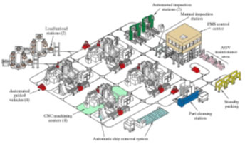
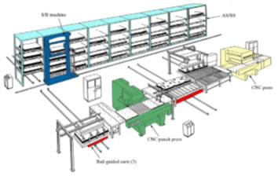
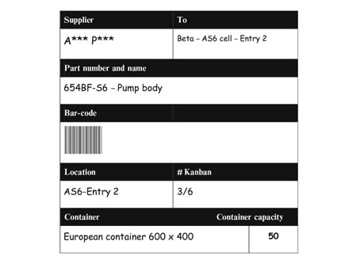
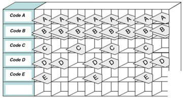
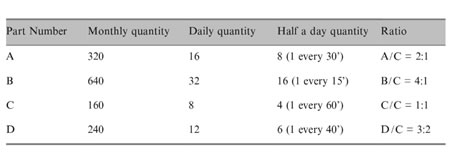

Manufacturing operations can make use of concepts of flexible automations for tasks that are encountered in the production environment, such as assembling, forging, press-working, and machining. Flexible Manufacturing has a wide range of applications in the industry with various configurations that can be set. Such configurations of machine and labor can range from flexible labor with no automation, to fully automated robotic loading of material and products. The amount of alternative paths that are needed is equivalent to the number of parts that are produced, with the amount of alternative paths needed maxing out to 20 even with a wide variety of parts involved in production. This is required to implement an efficient plan that allows for flexibility for daily schedules of production.
A preference for milling and drilling type operations has always existed for operations in FMSs. The operations carried out by these machines involve non-rotational parts using CNC machining centers. This preference was existent mainly due to the fact that FMSs that could manage rotational parts and turning center workstations were much less common. Other reasons for non-rotational part handling FMSs to have developed at a faster than rotational part handling FMSs include the fact that system components that could handle non-rotational parts were developed earlier than systems that could handle rotational parts, and the need to machine non-rotational parts in a more efficient manner due to them being relatively more expensive. Hence the use of FMS for non-rotational parts was equivalently given to rotational parts after the latter were taken into consideration.
Figure 9 – Vought Aerospace Plant Diagram
An example of a non-rotational FMS is the Vought Aerospace plant in Dallas (Figure 9), US. 600 different aircraft components are produced with the use of eight CNC horizontal machining centers and inspection modules. AGVs (Automated guided vehicles) are used for material handling. Two loading and unloading stations are present in the system with carousels. These carousels allow for parts to be stored onto palettes during the production process. This manufacturing system can output a sequence of single specially-designed parts in a continuous mode. This implies that batching is not required during the production process.
Figure 10 – Allen-Bradley Manufacturing Layout
An example of fabrication processing of sheet-metal using FMS is at the Allen-Bradley Company (Figure 10). This FMS is in charge of production of motor starters. The system is made up of 26 workstations that can carry out all of the processes necessary, from sub-assembly to packaging, to produce the complete product, with testing methods included. The factory can produce a total of 125 model styles, with the line having staggered production time between product lines. Each product line can have lot sizes ranging from singular units to 600 units per hour. The manufacturing system used at the Allen-Bradley Company benefits from having machines working without halting them, has automatic tool and pallet changing, and dynamic scheduling of production to compensate for any irregularities. The automation that these machines possess reduced the amount of machines required due to the flexibility and higher utilization provided by these machines. The space required for the production factory is also reduced and a greater responsiveness is shown when changes are applied. Requirements for inventory are also reduced due to different parts being processed together, and with the system being an automated one, the system can operate freely for lengthy periods without human intervention.
FMS systems are also used by high-profile companies such as Toyota. This company uses this manufacturing system to such an extent that they have created their own manufacturing system, designated as the “Toyota Production System (TPS).” With automobile production being the major form of production that Toyota carries out, the TPS is quite restrictive in application but it is effective nonetheless, and is most effective when deployed in labor-limited production. TPS delivers significant benefits such as low cost and utilization capacities especially when limits imposed on the labor force such as in assembly lines, fabrication areas, office operations and welding lines. These benefits are obtained by using flexibility as an offset in inventory and balance.
The Toyota Production System was born after the Second World War, where a defeated Japan had to compete with Western Industries whilst fighting disadvantages such as higher raw material costs and smaller internal demands due to the economic crisis after the war. Thus, the Toyota system had started by developing strategies and methods to reduce internal waste, or reducing the “Muda” as it is designated in the 13 pillars of the Toyota Production System. “Muda” is also accompanied by “Muri”, meaning overburden, and “Mura”, meaning irregularity. Muri means that any overburden of equipment and people must be removed from the process and production is to be distributed evenly. This is one of the key principles of the Just-In-Time System that the Toyota Production System is based on. Mura is the unevenness of the process, which is eliminated by smoothening the workflow of production. The process required to eliminate these factors are done through the application of Heijunka principles and Kanban devices.
The Kanban (meaning “label”) system is a method that defines the amount and type of products that have to be outputted from various processes to eliminate overproduction, increase flexibility to demand response, production in smaller lots, simplification of a product’s information system, as shown in Figure 11 and an increased process integration. There are two types of Kanban – Transportation/Movement Kanban and Production Kanban. The first type deals with the moving of products towards cells/productive processes, whereas the second type is the authorization to produce a certain product. This second category is split into further categories – Supplier Kanban and Internal Kanban. The first category is the process of ordering from external suppliers and the second category is used to establish communication between the production cells. Kanban is essentially an information gathering procedure on materials and products, where such a pull system is quite similar to shopping at supermarkets, where customers buy products on shelves that are then stocked up when empty.
Figure 11 – Kanban Label
Application of the Kanban can take on various shapes and sizes depending on the product. Internal Kanban makes communication with the internal cells and supplies the information needed to withdraw the required components from upstream or downstream processes. There are 4 ways that a Kanban can be applied on a product – using one Kanban that acts as information on the product, using Kanban that requests for a container containing numerous products with the same code, or as a “Kanban-box” that delivers products with different codes to the assembly line. Barcodes printed on the labels allow workers to check what products have been removed from the shelves and whether they have removed them from the right place.
The improvement in efficiencies of processing materials and components are complemented by an improvement in storage. The Heijunka board/box is the said improvement that was developed by Toyota in the 1960s. The Heijunka board (shown in Figure 12) keeps quantities and productive mixes within a cell leveled to reduce amount of processed lots, lead time, frozen capital and improve overall value stream. This board is a program schedule of placed in any point of the cell. This is done to set the rhthym of the production process.
Figure 12 – A common Heijunka Board
Quantities and codes that need to be produced are set according to a takt-time (meaning response time). The Kanban labels are placed on the board accordingly and, the board is used to order the required materials. A typical program set on Heijunka boards is shown in Figure 13.
Figure 13 – A common Heijunka Board
An example where the Toyota Production System that has been studied and would be highly effective is for healthcare in the US. Robert Chalice in his book “Improving Healthcare Using Toyota Lean Production Methods” is a proposition to effectively reduce costs in both the production and management of the US healthcare. Such changes include changing documentation of the products and to change the roles of the departments in the production, such as having a “quality and cost improvement department” in favor of “quality improvement department.” Reduction of overhead costs and rearrangement of segmented populations, setting a more cost-conservative mindset in adminstrative departments, measuring and reducing product times by automation are also included that are based on using the Heijunka and Kanban methods to keep a “scoreboard” of production that has labels to keep up with supply and demand whilst preventing overproduction.